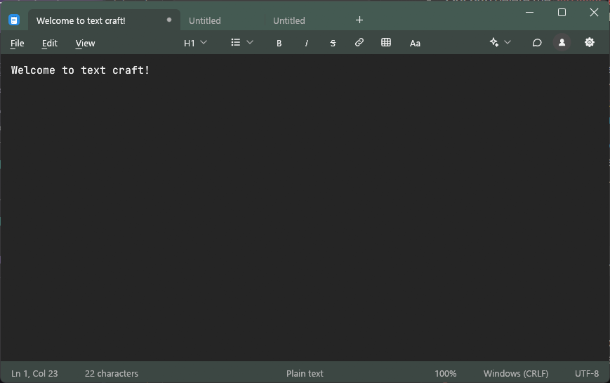

A fast, modern text editor.
Plain text and Markdown in one small native app, written in Rust.

Tabs that behave
Open many documents, drag tabs to reorder them, and scroll through the strip when there are too many to fit.
Markdown built in
A formatting toolbar for headings, lists, bold, italic, links and tables, and a rendered view of the document.
Native feel
One title row with the tabs and window buttons, Alt access keys on every menu, and the system's own Open and Save dialogs.
Small and quick
No web view and no runtime to install. One Rust binary, drawn with egui.
Get it
There are no packaged downloads yet. To build it you need Rust and Git.
git clone https://github.com/rsxdalv/TextCraft
cd TextCraft
cargo run --release -p nc-app